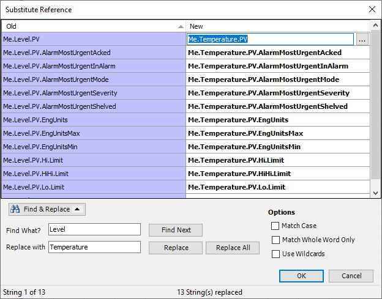
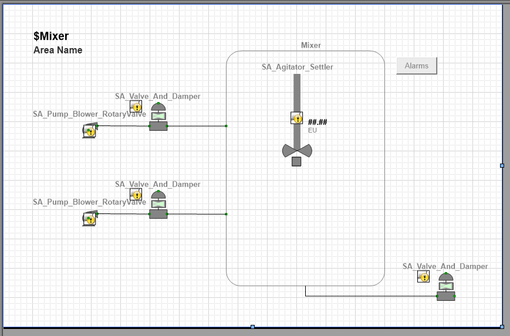
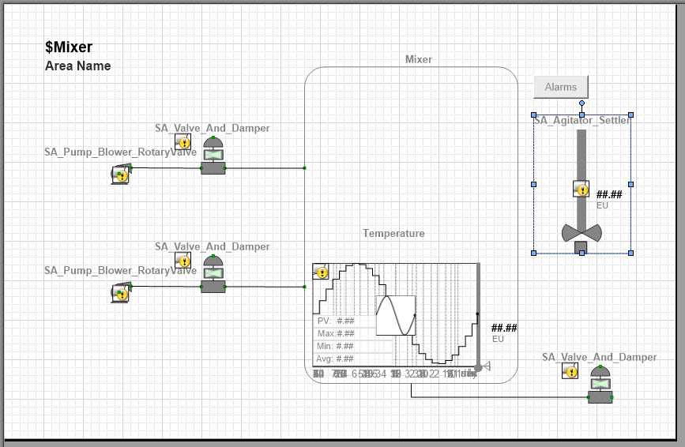
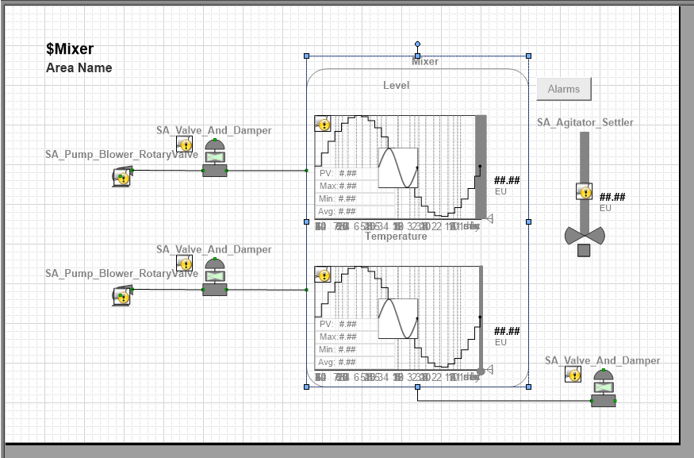
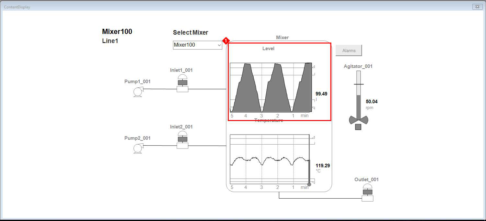
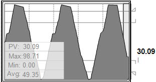
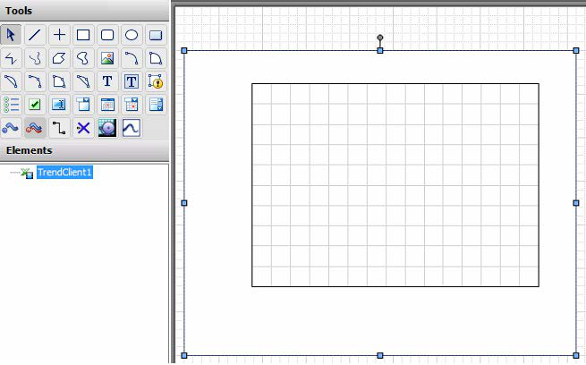
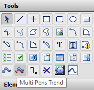
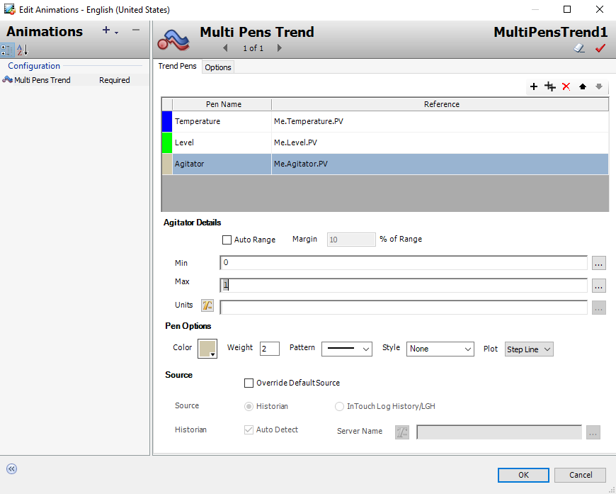

lab, you will display a real-time data plot. This will be done using Single Pen trend graphics for Level and Temperature in the mixing process graphic. Objectives Upon completion of this lab, you will be able to: Configure the SA_Trend_SinglePen symbol to display real-time and historical data
Runtime HMI screen showing Mixer100 on Line1 with Select Mixer dropdown, P&ID schematic with Pump1/2_001, Inlet1/2_001, Mixer tank with Level trend chart (99.49 value, gray filled area over 5-min time scale), Temperature trend chart (119.29°C, wave pattern), Agitator_001 (50.04 rpm), Outlet_001, and Alarms button
First, you will create LevelTrend_Detailed and TemperatureTrend_Detailed symbols in the $Mixer template. To do so, you will embed and configure SA_Trend_SinglePen from the Situational Awareness Library. 1. In the IDE, on the Templates tab, in the Training\Project template toolset, open the $Mixer template for editing. 2. In Content, add a new symbol named LevelTrend_Detailed, and then open it for editing. 3. From the Toolbox tab, embed Situational Awareness Library\Trends\ SA_Trend_SinglePen.
WindowMaker design canvas with SA_Trend_SinglePen object selected (blue handles), trend graph showing jagged line with gray shaded area, Toolbox tab active with search for 'single' showing 4 matching assets: DigitalMeter_Single, ISA_VenturiTube, SA_Trend_SinglePen highlighted
4. Name the embedded graphic LevelTrend and configure wizard options as follows: Name: LevelTrend YAxisRangeType: ClipOutOfRangeValue PlotType: Line Label: True SymbolMode: Advanced AlarmBorder: True Meter: True MeterType: Level EngUnitsType: CustomPropertyLabel AlarmLimitIndicators: True AlarmHiHiLimitIndicator: True AlarmHiLimitIndicator: True AlarmLoLimitIndicator: True AlarmLoLoLimitIndicator: True FloatingTooltip: True
Properties panel for LevelTrend showing wizard options: Type=SimpleTrend, Historian=AutoDetect, TimePeriodMode=Moving, YAxisRangeType=ClipOutOfRangeValue, PlotType=Line, Meter=True, MeterType=Level, AlarmBorder=True, FloatingTooltip=True, plus alarm limit indicators all enabled
5. Right-click LevelTrend and select Substitute | Substitute References. 6. Use Find & Replace to replace all references to Me.PV with Me.Level.PV. Your references should appear as follows: 7. Change Me.Level.PV.EngUnitsRangeMax to Me.Level.PV.EngUnitsMax. 8. Change Me.Level.PV.EngUnitsRangeMin to Me.Level.PV.EngUnitsMin. 9. Click OK to close Substitute Reference.
Substitute Reference dialog showing find-and-replace operation changing Me.PV to Me.Level.PV across 13 tag references including AlarmMostUrgentAcked, EngUnits, HiLimit, LoLimit, EngUnitsMax/Min, with 13 strings replaced successfully
10. Use Substitute Strings to change the text Label to Level. 11. Click OK to close Substitute Strings.
Substitute Strings dialog showing string replacement list with Old/New columns, Label replaced with Level (highlighted in blue), other strings unchanged (60, 7, 8, Avg:, day, EU, hr, Max:, min, Min:, PV:, sec), String 26 of 31
12. On the Properties tab, in Custom Properties, change the EnableFill property to True and the FillColor property to Gray. Note: The description of the FillColor custom property shown at the bottom of the screen shot above indicates there are eight color choices for the fill color. The color you selected (Gray) is one of these colors. The Level meter in this course uses this filled area to represent a Volumetric Flow measured in liters per second for the mixing process. 13. Save and close the graphic.
Now, you will duplicate LevelTrend_Detailed to create TemperatureTrend_Detailed in the $Mixer template. Then you will modify the duplicate. 14. In Content, with LevelTrend_Detailed selected, click Duplicate. 15. Name the duplicate TemperatureTrend_Detailed and open it for editing. 16. On the canvas, select the graphic.
Content panel showing AlarmSeverityPanel, LevelTrend_Detailed (selected/highlighted), MixingProcess_Detailed, and MixingProcess listed, with Duplicate (Ctrl+D) button active for duplicating LevelTrend_Detailed to create TemperatureTrend_Detailed
17. On the Properties tab, change the properties as follows: 18. Use Substitute Strings to change Level to Temperature. Name: TemperatureTrend MeterType: Temperature EnableFill: False
Substitute Strings dialog showing Find What='Level', Replace with='Temperature', Replace All button highlighted, 1 string replaced out of 31 total, for changing Level references to Temperature in the duplicated trend object
19. Use Substitute References to change Level to Temperature. 20. Save and close the graphic. 21. In Content, open MixingProcess_Detailed for editing. 22. On the canvas, select the Level and Temperature meters and delete them.

MixingProcess_Detailed design canvas showing $Mixer area with SA_Agitator_Settler, SA_Pump_Blower_RotaryValve (x2), SA_Valve_And_Damper (x3) symbols, ##.## EU placeholders, blue selection handles around the entire Mixer group, Alarms button top right

MixingProcess_Detailed design canvas with Level and Temperature meters selected for deletion, showing SA_Agitator_Settler, SA_Pump_Blower_RotaryValve, SA_Valve_And_Damper symbols with yellow alarm indicators and green status indicators
23. From Relative References, embed Me.TemperatureTrend_Detailed and place in the bottom half of the Tank. 24. Move the agitator graphic to the right of the Mixer tank as shown below.
MixingProcess design canvas showing $Mixer area with Temperature trend chart embedded (PV, Max, Min, Avg placeholders, ##.## EU, time axis 10-60 min), SA_Agitator_Settler on right, SA_Pump_Blower_RotaryValve and SA_Valve_And_Damper on left inlet lines, Alarms button

MixingProcess design canvas with Level trend chart and Temperature trend chart both embedded inside the Mixer vessel rectangle, SA_Agitator_Settler on right, inlet pump/valve assemblies on left, outlet valve on bottom right, all with ##.## EU placeholders
25. From Relative References, embed Me.LevelTrend_Detailed and place it in the top half of the tank above the temperature graphic. 26. Resize the tank graphic to fit the Level and Temperature graphics. 27. Save and close the graphic. 28. Save and close and check in the $Mixer template.
MixingProcess design canvas showing Level and Temperature trend charts inside Mixer vessel, SA_Agitator_Settler with speed readout, SA_Pump_Blower_RotaryValve and SA_Valve_And_Damper symbols, blue selection handles around Mixer group

MixingProcess design canvas with Level and Temperature trends embedded in mixer tank, agitator symbol, inlet pumps and valves, outlet valve, all connected by green flow lines with process value placeholders
Now, you will view the trend graphics in runtime. 29. In WindowMaker, click Runtime. 30. In the ContentDisplay window, observe the Level and Temperature trends. 31. Place the mouse pointer on one of the trends and verify the floating tooltip appears. The floating tooltip contains the current value, limits, and average (Max minus Min). Additionally, in the meter on the right, alarm limits are shown for HiHi, Hi, Lo, and LoLo. The graphic also shows the alarm border when in alarm. 32. Click Development! to return to WindowMaker.

Runtime ContentDisplay showing Mixer100 on Line1 with Level trend chart (sawtooth pattern, 99.49 current value, 5-min reversed time scale), Temperature trend chart (119.29°C, wave pattern), pump/inlet/outlet symbols, Alarms button, Agitator_001 at 50.04 rpm

Runtime HMI with Level and Temperature trend charts showing real-time data, floating tooltip visible on trend with PV, Max, Min, Avg values, alarm limit indicators (HiHi, Hi, Lo, LoLo) on meter display
built-in methods for plotting multiple pens simultaneously. The first of these (and not part of this course) is the Trend Client control. The Trend Client control can be used in symbols to chart attribute current values from Application Server and current tag values from the InTouch HMI software. The Trend Client supports two sources of data: real-time and historical. Real-time data can be sourced from Application Server object attributes or from InTouch tags. Historical data can be sourced from Historian or InTouch .lgh files. The following shows the TrendClient tool in the Tools pane and the control placed on the canvas in the Graphic Editor. This section describes the Trend Client control as a real-time trend plot. It introduces Multi Pens Trend as a real-time trend solution and explains backfilling data from Historian.

Tools palette showing all HMI design tools in grid layout with Multi Pens Trend tool highlighted/selected at bottom, text 'Multi Pens Trend' displayed below the tool grid for adding multi-variable trend charts
(and the focus on this course) is the Multi Pens Trend. The Multi Pens Trend displays a succession of process values with multiple trend lines in a single trend chart. It is available from the Tools pane in the Graphic Editor. Once you place the Multi Pens Trend control on the canvas, the Edit Animations dialog box appears with options for the Multi Pens Trend animation. Through the animation, you can configure options for adding trend pens and their references, along with trend details, pen options, and other settings. A maximum of eight pens can be configured. The reference for a pen is the data source that appears as the value shown by the trend. It can be an external reference such as an object attribute, an InTouch tag, or a custom property. Constants and expressions are not allowed. You can enter the reference in the Reference field or use the ellipsis next to the field to select a reference. Reference details include the Min and Max range and units of measure for the values of a selected pen.

Edit Animations dialog for MultiPensTrend1 showing Trend Pens tab with 3 pens configured: Temperature (blue, Me.Temperature.PV), Level (green, Me.Level.PV), Agitator (beige, Me.Agitator.PV), with pen details section showing Min=0, Max=10, Plot=Step Line, Source section with Historian/InTouch Log History options

Edit Animations dialog showing Multi Pens Trend configuration with Trend Pens table (Temperature, Level, Agitator pens with color-coded references), Agitator Details with range settings (Min=0, Max=10), Pen Options with color/weight/pattern, Source section for data source configuration, Options tab visible
Knowledge Check
1. What are the key concepts covered in this lesson about Lab 17 – Adding Trending to Graphics?
Click to reveal answer
Review the sections above for the main topics, step-by-step procedures, and important configuration details.
2. How does this topic relate to AVEVA System Platform?
Click to reveal answer
This is part of the InTouch HMI layer, which integrates with Application Server's Galaxy for a complete visualization solution.
Module 6 — Trend Visualization. AVEVA InTouch for System Platform 2023 Training.